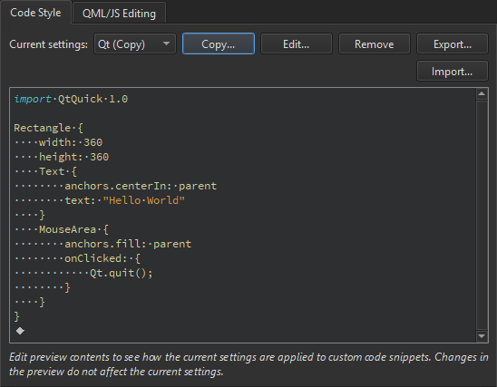

Qt Quick Code Style
To specify QML code style globally:
- Select Preferences > Qt Quick.
- In the Current settings field, select the settings to modify and click Copy.

- Give a name to the settings and click OK.
- Click Edit to specify code style settings for the project.
You can specify how to interpret the Tab key presses and how to align continuation lines.
In Line length, you can adjust the maximum line length for code lines.
To override the global preferences for a particular project, select Projects > Code Style.
See also Indent text or code.